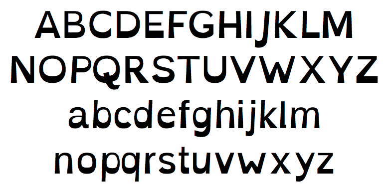
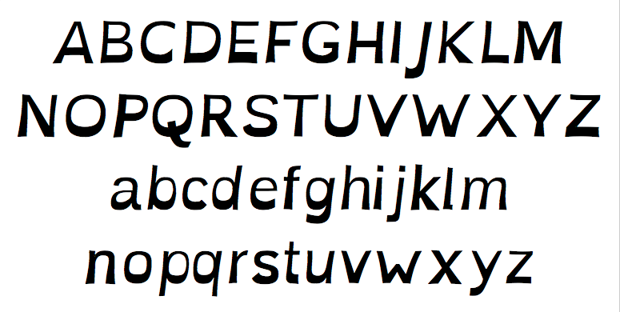

SIL-OFL licensed typeface to assist in helping with some symptoms of dyslexia.
Your brain can sometimes do funny things to letters. Eulexia tries to help prevent some of these things from happening. Letters have heavy weighted bottoms to add a kind of "gravity" to each letter, helping to keep your brain from rotating them around in ways that can make them look like other letters. Consistently weighted bottoms can also help reenforce the line of text. The unique shapes of each letter can help prevent flipping and swapping.
Eulexia also has a special italic style. Generally, italic typefaces are to be avoided for legibility reasons, especially for people with dyslexia. Because of this, Eulexia's italic styles are not your standard "slant x%" styles that most do, and instead are carefully crafted for their use to provide emphasis and still maintain high readability.
For more information and other typefaces, etc, see http://abbiecod.es or http://dyslexicfonts.com
Enjoy!